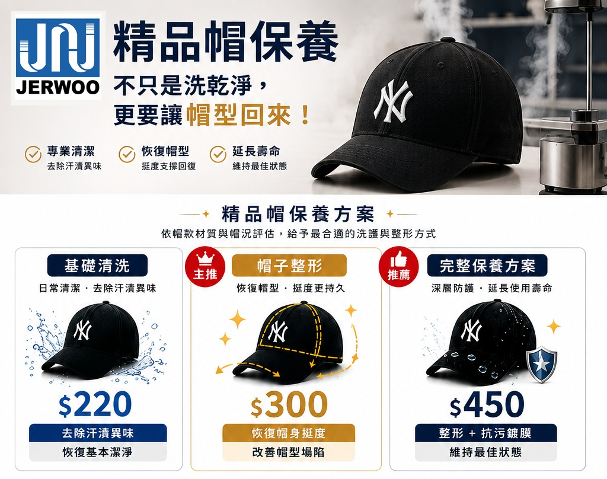
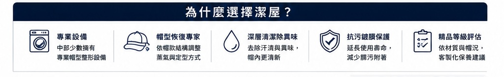
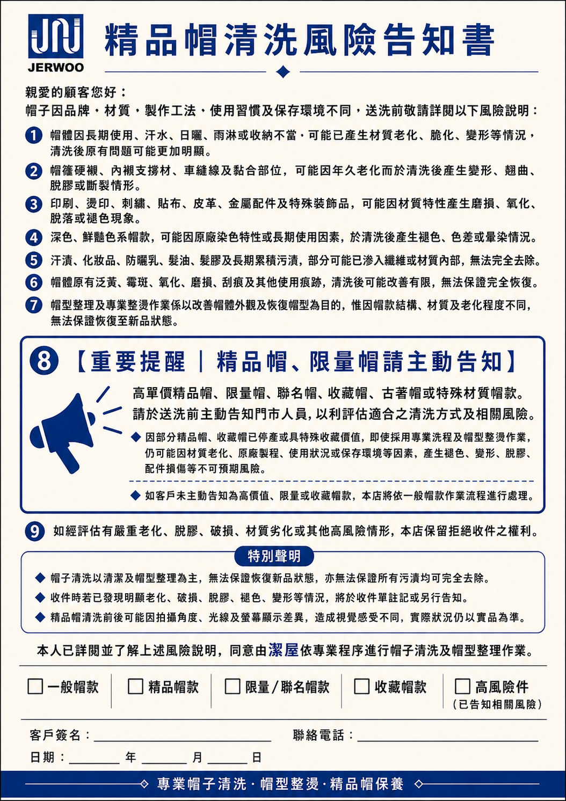
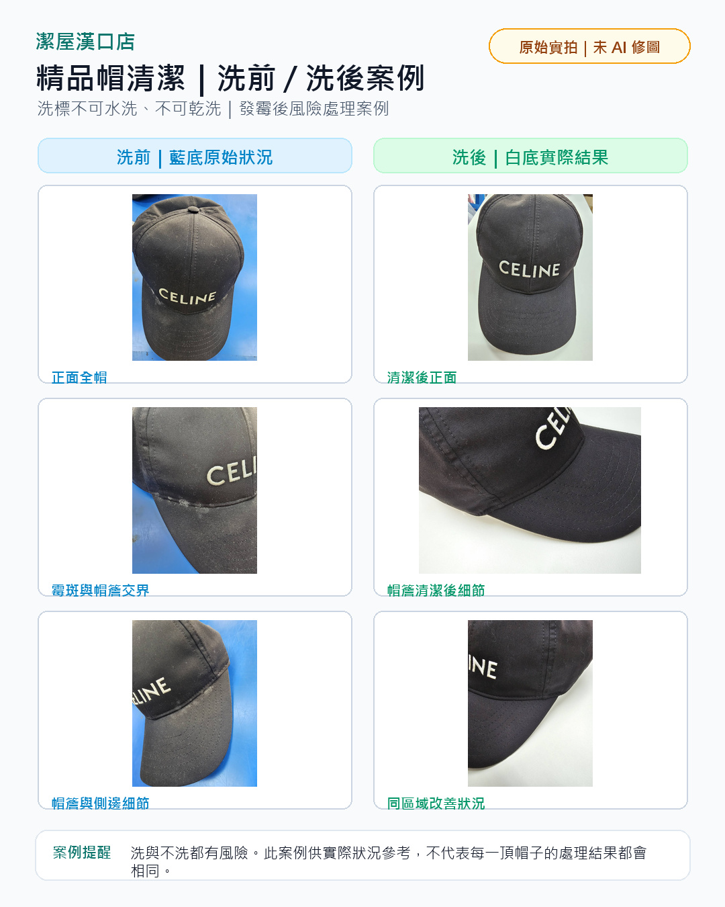
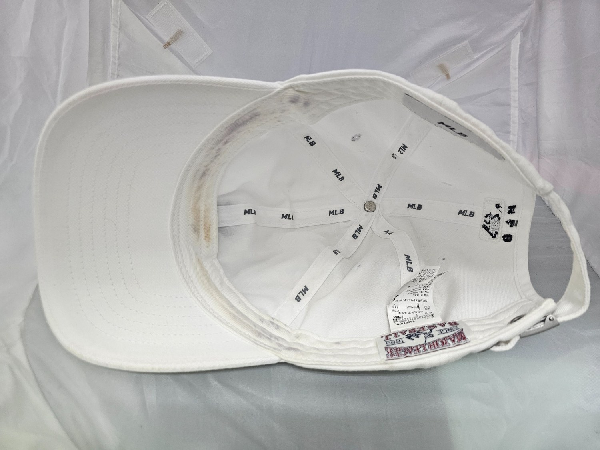
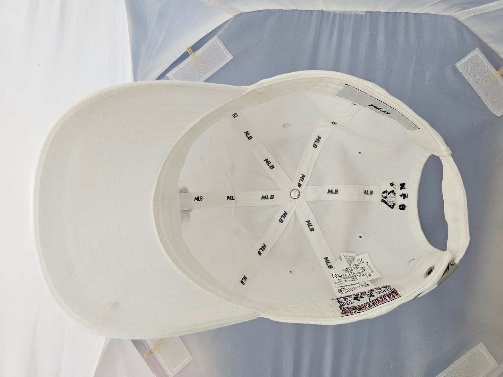
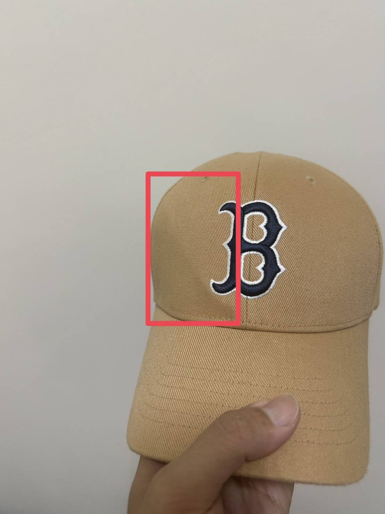
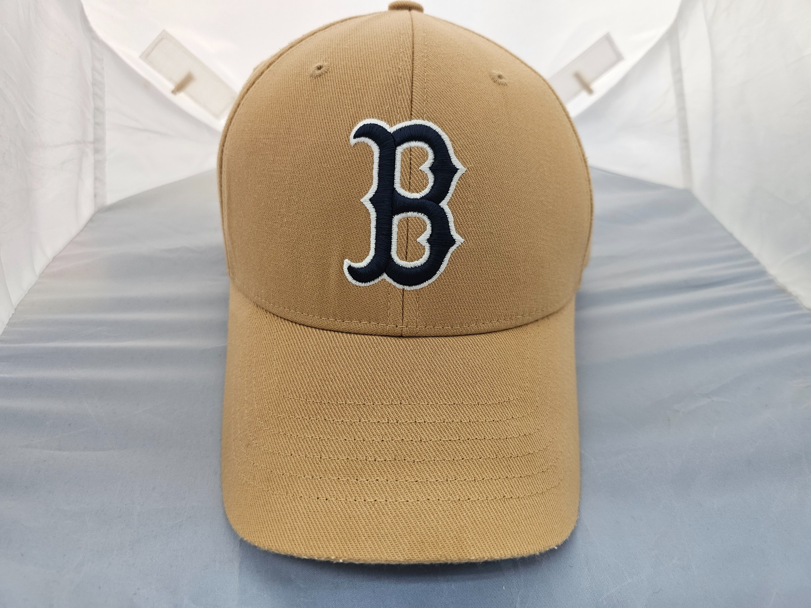

洗滌風險與注意事項｜點擊查看完整告知
帽款因材質、結構、老化、汗漬及既有損傷不同，清洗或整形後可能有褪色、變形、飾件損傷、黏合處剝離、既有折痕或污漬殘留等風險。高單價、限量或特殊材質帽款，請先告知門市並確認評估。

帽子整形｜實際作業影片
真實清洗案例
精選實際案例，點選角度比較洗前與洗後；照片未進行清潔效果美化。
案例 01｜帽子清洗前後

案例 02｜MLB 白色棒球帽
清潔重點：帽緣內側污漬清潔。點選角度查看洗前洗後。


實際清洗效果因帽款材質、污漬種類、附著程度與既有狀況而異。
案例 03｜MLB 卡其色棒球帽・帽型壓痕整理
整理重點：帽身壓痕與帽型線條。選擇角度，比較整理前後的實際狀態。


正面整理前照片以紅框標示原有壓痕。拍攝背景及光線不同，請以帽身輪廓與局部細節為比較重點。壓痕改善程度因材質、結構與受壓時間而異，不保證完全消除。